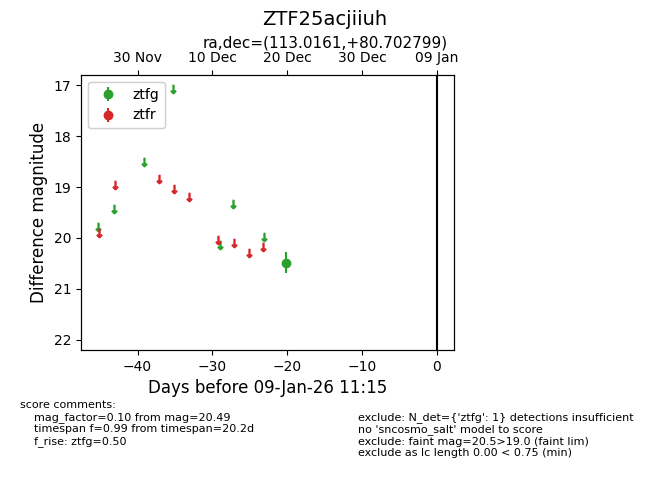
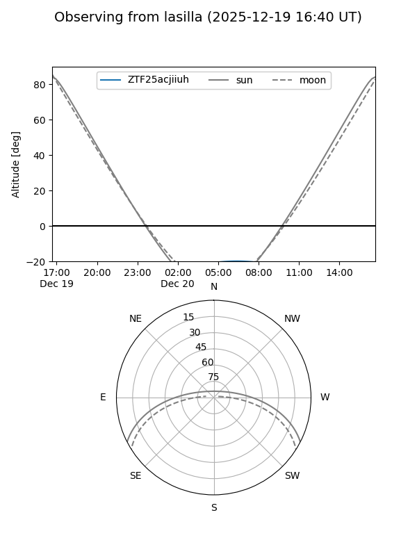
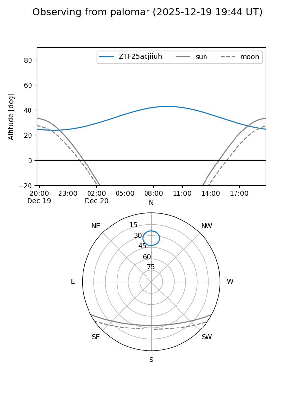

ZTF25acjiiuh
Target ZTF25acjiiuh at 2026-01-09 12:49
Aliases and brokers:
FINK: link
Lasair: link
ALeRCE: link
alt names
ZTF25acjiiuh (ztf,fink_ztf)
Coordinates:
equatorial (ra, dec) = 113.0161,+80.70280
equatorial (HMS+DMS) = 07:32:03.87,+80:42:10.08
galactic (l, b) = (133.3454,+28.38204)
Flags:
Photometry:
last ztfg=20.49
1 ztfg detections
Lightcurve

Visibility


Additional plots